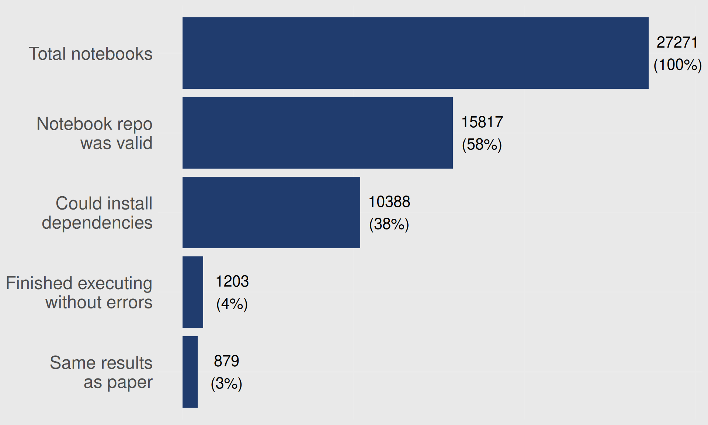
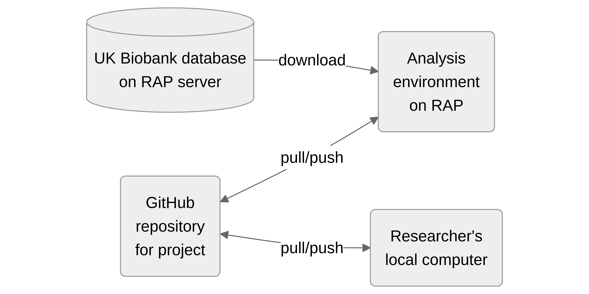

(Non-) Reproducibility: Or, what are we even doing? And how can we improve?
Luke W. Johnston
June 17, 2025
Why are we ok with this?
If we aren’t ok with this, what can we do?
… at an individual group or collaborator level
… within reproducibility and the connected open science
Same data, same code, same results?
What’s the current state of that?
Very low reproducibility in most of science


Even in institutional code and data archive, executability is low!
- Code taken from Harvard Dataverse Project data repositories
- Only 25% could be executed without some “cleaning up”
- After some automatic cleaning, ~50% could execute
Why are we ok with this?
Verification is key to calling it science…
My experiences: UK Biobank project at Steno Aarhus
Two main aims
- To build up a process and workflow for effective collaboration that follows best practices and principles in openness, reproducibility, and scientific rigor.
- To build a community around a shared project at Steno Aarhus in order to create a better research culture …
Achieve by using many reproducible and open practices on sub-projects
- Fully reproducible analysis
- Version control
- Code-based extraction of data
- Code reviews throughout
- Publish protocol, preprint, and code
My personal aim: Automate/streamline many project organization/management tasks
UK Biobank and RAP was a great opportunity to do full reproducibility
- RAP = Research Analysis Platform from DNAnexus
- Clean, empty environment every time you start up
Flows between environments

Biggest challenge: Working with RAP is a mess
Documentation was/is near to the lowest priority they had
But finally created an R package to help others out
Next challenge: Reviewing code, which was enlightening
“It runs”, doesn’t mean it outputs what you think it does.
But also an immense amount of work and time
Basically done by only me
Pressure to publish and limited training = lower priority for reproducibility
Limited understanding or effective use of GitHub
PhD students and postdocs don’t get rewarded for getting it right, they get rewarded for publishing
I stepped back, I was burning out
Important lesson: We desperately need TEAMS!
Success 1: Everyone had to use Git/GitHub
https://github.com/orgs/steno-aarhus/teams/ukbiobank-team/repositories
Success 2: Code published after paper published
Advantage: I controlled their GitHub repo (via the organization)
https://steno-aarhus.github.io/ukbAid/projects.html#completed
My experiences: Steno Aarhus using GitHub
Rant a lot 📣 and repeat regularly
Ranted enough, Steno Aarhus adopted using GitHub
At least for building websites and hosting material on projects
Initially used GitHub to put common documents 📝
Website: https://steno-aarhus.github.io/research/
GitHub: https://github.com/steno-aarhus/research
Several project website being hosted there
Strategies at the individual level
Rant, be vocal, and don’t be ok with it
Be angry, be mad! 😡
Expect more from your collaborators and organisation/group
And verbalise it! 🤬
Strategies at the group or organisational level
Strong top-down enforcement of practices
Make someone, with power, responsible for the practices
Both overseeing but also doing the work as needed
Make group-specific package to handle common tasks
And assign and support someone to build and maintain it
Have clear expectations and requirements, e.g. on tools
- Git, GitHub
- Quarto (Markdown)
- Targets (if R)
- Justfile/Makefile (for general build management)
- Snakemake/prefect/nextflow (for Python)
More resources and information
Teaching
My current work and collaborations
- Seedcase Project: Building FAIR, organized, and modern infrastructures for research data
- DP-Next: “…developing a sustainably effective strategy for prevention of Type 2 Diabetes”. My focus on “doing better research in less time and fewer resources”
- ON-LiMiT: “An intervention study for remission of type 2 diabetes with diet and exercise”. My focus is on building a fantastic database for them.
Licensed under CC-BY 4.0.
Slides at slides.lwjohnst.com